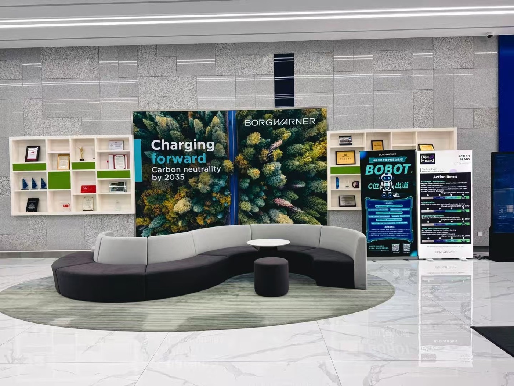

案例 01 · 乳业集团
从诊断到转型路径
从现有人力资源运营模式诊断，到组织设计、共享服务投入产出评估和三年实施路径。
- 时间
- 2020
- 客户
- 全球乳业集团
- 周期
- 6 个月
组织设计 · 共享服务 · 能力建设
一家全球领先的乳业集团：从现有人力资源运营模式，到三年转型路径
客户已建立初步的三支柱模式。我从现有人力资源运营模式诊断、团队工作分析和高阶设计切入，完成组织架构与管控模式设计，并形成覆盖未来三年的实施路径。
阅读完整案例
案例 02 · 汽车集团
跨国合并后的全球协同
在区域自治与全球整合之间建立共同方向，并为全球 HR 共享服务形成可实施的高阶路线图。
- 时间
- 2020
- 客户
- 全球汽车集团
- 范围
- 中国 · 美洲 · 欧洲
全球 HR 共享服务 · 利益协同 · 实施路线图
一家全球领先的汽车集团：从区域分歧走向全球共享服务共同方向
在两家大型国际汽车业务合并后，我作为德勤中国侧项目经理，协调客户高管与全球咨询团队，以高管赞助、证据分析和分阶段协作回应区域 HR 对决策权与服务交付的顾虑，形成覆盖中国、美洲和欧洲的高阶实施路线图。
阅读完整案例